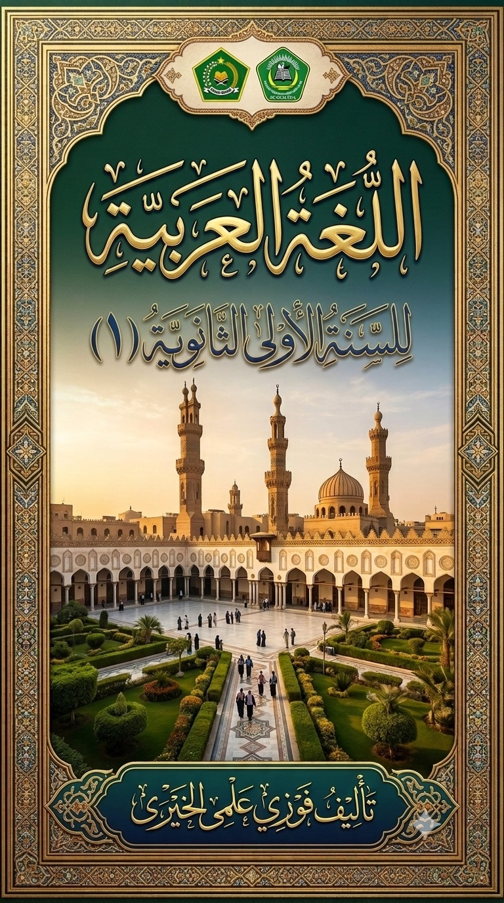

Bahasa Arab Kelas 7 Semester 1
Menguasai Bahasa Arab dengan Metode Modern dan Interaktif


Menguasai Bahasa Arab dengan Metode Modern dan Interaktif
Pelajari cara memperkenalkan diri dalam bahasa Arab dengan proper dan sopan. Materi ini mencakup kosakata dasar, struktur kalimat perkenalan, dan dialog interaktif.
Akses Materi →Pelajari cara menyebutkan dan menanyakan alamat dengan tepat. Termasuk kosakata terkait lokasi, arah mata angin, dan preposisi tempat.
Akses Materi →Menguasai kosakata tentang keluarga, silsilah, dan hubungan kekerabatan dalam bahasa Arab dengan contoh dialog keluarga Muslim.
Akses Materi →Pelajari nama-nama ruangan, perabot rumah tangga, dan cara mendeskripsikan rumah dalam bahasa Arab dengan sempurna.
Akses Materi →Kosakata tentang sekolah, fasilitas pendidikan, mata pelajaran, dan aktivitas belajar mengajar di lingkungan madrasah.
Akses Materi →Mempelajari nama-nama benda di kelas, peraturan sekolah, dan cara berinteraksi dengan guru dan teman sekelas.
Akses Materi →Pelajari angka 1-100 dalam bahasa Arab, cara menghitung, menyebutkan tanggal, dan operasi matematika sederhana.
Akses Materi →Evaluasi komprehensif untuk pertemuan 1-7. Ujian mencakup listening, reading, writing, dan speaking.
Akses Ujian →Menguasai kosakata warna-warna dalam bahasa Arab, cara mendeskripsikan objek berdasarkan warna, dan sifat-sifat benda.
Akses Materi →Pelajari nama-nama hewan dalam bahasa Arab, karakteristik hewan, dan cara membuat kalimat deskriptif tentang hewan.
Akses Materi →Kosakata tentang tumbuhan, buah-buahan, sayuran, dan cara menyebutkan bagian-bagian tanaman dalam bahasa Arab.
Akses Materi →Mempelajari nama-nama anggota tubuh, fungsi masing-masing bagian, dan cara mengungkapkan rasa sakit atau keluhan kesehatan.
Akses Materi →Kosakata tentang tempat-tempat umum, cara bertanya dan memberi petunjuk arah, serta preposisi tempat yang kompleks.
Akses Materi →Pelajari kosakata tentang pekerjaan, profesi, dan cara mengungkapkan aktivitas sehari-hari dengan fi'il mudhari'.
Akses Materi →Belajar melalui nasyid dan lagu-lagu Arab untuk meningkatkan hafalan kosakata dan pelafalan (makhraj) yang benar.
Akses Materi →Evaluasi akhir untuk seluruh materi semester 1. Ujian komprehensif dengan standar kompetensi yang telah ditetapkan.
Akses Ujian →Akses video pembelajaran untuk setiap topik penting
Video At-Ta'aruf Video Al-Unwan Video Al-Usrah Video Al-BaitAt-Ta'aruf atau perkenalan merupakan materi fundamental dalam pembelajaran bahasa Arab. Kemampuan memperkenalkan diri dengan baik adalah kunci untuk membangun komunikasi yang efektif dalam bahasa Arab. Materi ini dirancang untuk membekali siswa dengan kosakata, struktur kalimat, dan etika perkenalan yang sesuai dengan adab Islam.
Berikut adalah kosakata dasar yang harus dikuasai:
Dalam bahasa Arab, kalimat perkenalan menggunakan struktur Jumlah Ismiyah (kalimat nominal) yang diawali dengan isim (kata benda). Pola dasar yang digunakan adalah:
| Aspek | Bahasa Indonesia | Bahasa Arab | Catatan Penting |
|---|---|---|---|
| Struktur Kalimat | S-P-O (Subjek-Predikat-Objek) | P-S (Predikat-Subjek) atau S-P | Bahasa Arab lebih fleksibel |
| Kata Ganti | Saya, Kamu, Dia | أَنَا، أَنْتَ، هُوَ | Arab membedakan gender |
| Kata Tanya | Apa, Siapa, Di mana | مَا، مَنْ، أَيْنَ | Diletakkan di awal kalimat |
| Sapaan | Halo, Hai | السَّلاَمُ عَلَيْكُمْ | Sunnah Rasulullah SAW |
Situasi: Ahmad adalah siswa baru di MTs Diniyah Limo Jurai. Pada hari pertama, ia harus memperkenalkan diri di depan kelas yang terdiri dari 25 siswa baru lainnya.
Tantangan:
Solusi:
1. Terjemahkan ke bahasa Arab:
2. Buatlah dialog perkenalan antara 2 orang dengan minimal 8 kalimat!
Al-Unwan (alamat) merupakan materi penting untuk kemampuan berkomunikasi dalam kehidupan sehari-hari. Siswa akan belajar cara menyebutkan alamat lengkap, menanyakan lokasi, dan memberikan petunjuk arah dalam bahasa Arab.
| Bahasa Arab | Arti | Contoh Penggunaan |
|---|---|---|
| فِيْ | Di/Dalam | أَسْكُنُ فِيْ لِيْمُوْ (Saya tinggal di Limo) |
| عَلَى | Di atas/Pada | الْبَيْتُ عَلَى الْيَمِيْنِ (Rumah di sebelah kanan) |
| تَحْتَ | Di bawah | الْكُرْسِيُّ تَحْتَ الْمَكْتَبِ (Kursi di bawah meja) |
| أَمَامَ | Di depan | الْمَسْجِدُ أَمَامَ الْمَدْرَسَةِ (Masjid di depan sekolah) |
| خَلْفَ | Di belakang | الْحَدِيْقَةُ خَلْفَ الْبَيْتِ (Kebun di belakang rumah) |
| بِجَانِبِ | Di sebelah | الْمَكْتَبَةُ بِجَانِبِ الْمَسْجِدِ (Perpustakaan di sebelah masjid) |
Keluarga (Al-Usrah) adalah unit sosial terkecil dalam masyarakat. Menguasai kosakata tentang keluarga sangat penting untuk berkomunikasi tentang silsilah, hubungan kekerabatan, dan kehidupan domestik.
| Bahasa Arab | Arti | Bahasa Arab | Arti |
|---|---|---|---|
| الْوَالِدُ | Ayah | الْوَالِدَةُ | Ibu |
| الابْنُ | Anak laki-laki | الابْنَةُ | Anak perempuan |
| الزَّوْجُ | Suami | الزَّوْجَةُ | Istri |
| الْعَمُّ | Paman (dari ayah) | الْخَالُ | Paman (dari ibu) |
| الْعَمَّةُ | Bibi (dari ayah) | الْخَالَةُ | Bibi (dari ibu) |
| ابْنُ الْعَمِّ | Sepupu (laki-laki) | بِنْتُ الْعَمِّ | Sepupu (perempuan) |
Materi Al-Bait mengajarkan siswa untuk mengenal nama-nama ruangan, perabot rumah tangga, dan cara mendeskripsikan rumah dalam bahasa Arab. Materi ini sangat praktis untuk kehidupan sehari-hari.
| Arab | Indonesia | Arab | Indonesia |
|---|---|---|---|
| الْكُرْسِيُّ | Kursi | الْمَكْتَبُ | Meja |
| السَّرِيْرُ | Tempat tidur | الْخِزَانَةُ | Lemari |
| الْمِرْآةُ | Cermin | الْمِصْبَاحُ | Lampu |
| الثَّلاَّجَةُ | Kulkas | الْمِوْقَدُ | Kompor |